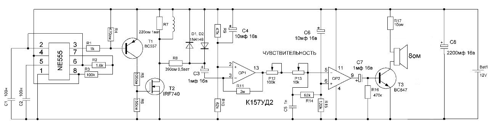
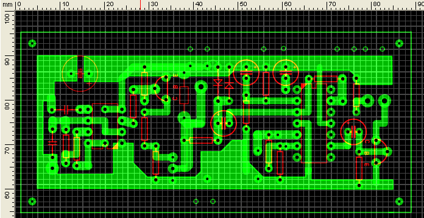
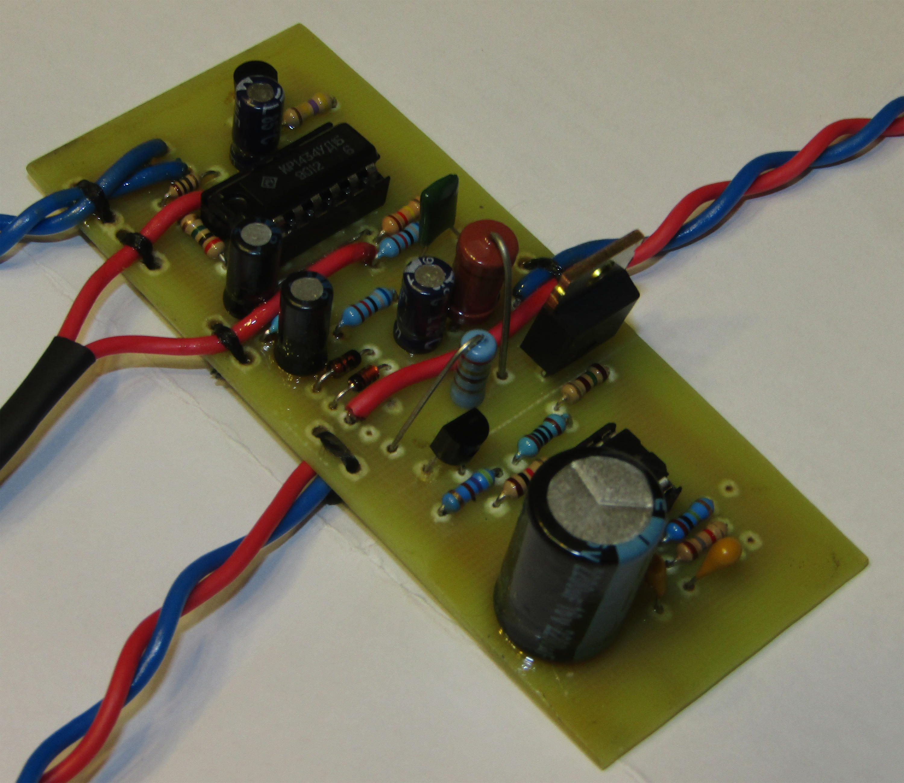
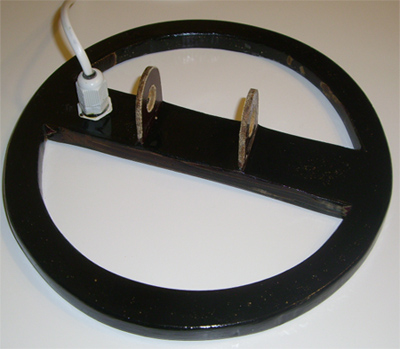

Принцип работы металлоискателя Пират
Прежде чем приступить к сборке металлоискателя предлагаю ознакомиться с электрической схемой, представленной на рисунке.
Прибор состоит из двух основных узлов, передающего и приемного. Передающий узел состоит из генератора импульсов на микросхеме NE555 и мощного ключа на транзисторе IRF740. Приемный узел собран на микросхеме К157УД2 и транзисторе ВС547.
Изготавливаем печатную плату:
Печатную плату изготавливаем по методу лазерно-утюжной технологии (ЛУТ) файл для скачивания будет доступен по ссылке СКАЧАТЬ. Мой вариант печатной платы немного больше оригинальной т.к. предусматривает наличие отверстий для крепления к корпусу и отверстия для фиксации проводов динамика, переменных резисторов, проводов питания.
Заказываем элементы
Все элементы необходимые для монтажа вы с легкостью сможете приобрести в радиомагазине. Полный список с наименованием элементов доступен по ссылке СКАЧАТЬ.
Монтаж элементов
Монтаж элементов необходимо начинать с установок перемычек, далее установка выводных резисторов, панельки под микросхемы, монтаж конденсаторов и транзисторов. От аккуратности и качества проведенных работ зависит дальнейшая работа прибора. После монтажа плату необходимо тщательно промыть от канифоли.
Изготавливаем датчик
Для катушки металлоискателя используют провод ПЭТВ-2 сечением 0,5мм. Наматывают на оправку диаметром 20 см - 22 витка. Для предания эстетического вида датчику катушку лучше всего залить эпоксидной смолой.
Подключаем питание и проверка модуля
При подключении питания не забывайте соблюдать полярность, так как в классическом исполнении нет защит от переполюсовки. В качестве питающего аккумулятора можно использовать батарейку типа КРОНА. При исправных элементах и правильной сборке модуль в регулировке не нуждается. Для более тщательной настройки можно подобрать шунтирующий резистор R7. также подборкой резистора R2 можно менять период и длину импульса добиваясь максимальной чувствительности к крупным либо мелким целям.